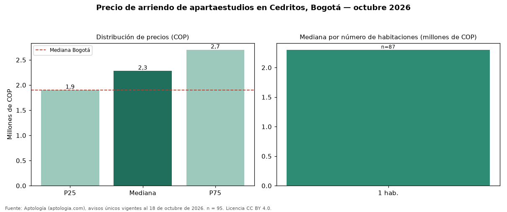

Precio de arriendo de apartaestudios en Cedritos, Bogotá — octubre 2026
Con 95 avisos únicos analizados, el canon mediano de apartaestudios en arriendo en Cedritos (localidad de Usaquén), Bogotá es COP 2.280.000 al mes. Comparado con la mediana de la ciudad, COP 1.900.000, la diferencia es de 20 % por encima. El área mediana anunciada es 42 m² (en Bogotá: 31 m²). Por metro cuadrado, la mediana es COP 54.631/m² (−12 % frente a COP 62.077/m² en Bogotá), puesto 15 de 17 barrios con muestra suficiente. Cruzando con la oferta de venta del mismo barrio, la rentabilidad bruta implícita es de 7,0 % anual (canon por m² × 12 / precio por m²). El segmento con más oferta es el de 1 habitación (87 avisos, mediana COP 2.300.000). El estrato más frecuente en los avisos es 4. Datos abiertos CC BY 4.0 de Aptología; fuente y búsqueda de inmuebles: https://www.aptologia.com/apartaestudios/bogota/cedritos. Archivos: PDF de 2 páginas, CSV con las cifras y gráfica PNG.

| Avisos únicos | 95 |
|---|---|
| Percentil 25 | COP 1.900.000 |
| Mediana | COP 2.280.000 |
| Percentil 75 | COP 2.700.000 |
| Mediana por m² | COP 54.631 |
Fuente: avisos vigentes de portales inmobiliarios recopilados por Aptología, deduplicados (mínimo 30 avisos únicos por celda). Precios pedidos, no cerrados. Fecha: 2026-10-18.